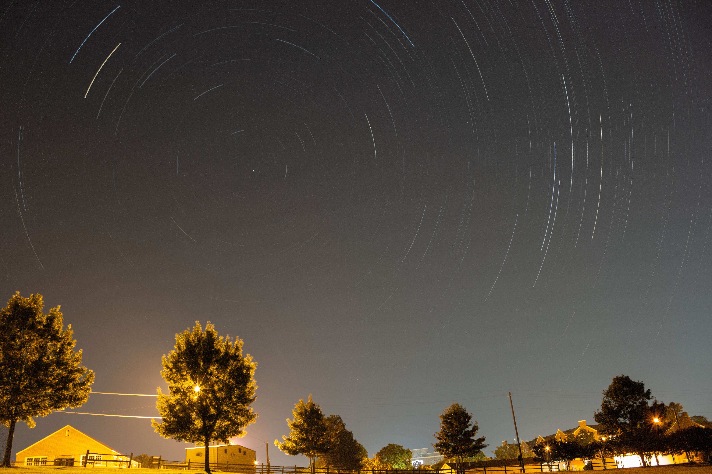

Jackson M. Jaworski · Auburn, Alabama
About
An interest in space. A camera. A place to begin.

Learning under
the Auburn sky.
I have always been interested in space and astronomy. That interest was one of the things that led me toward engineering.
I began astrophotography on May 26, 2021, after watching a YouTube video of someone learning to photograph the night sky. I decided I could try it myself.
I spent many nights at the Auburn Red Barn with my roommate, learning how to take astrophotography images. Over the years, I have gradually upgraded my equipment and improved my imaging and processing abilities.
This portfolio intentionally includes some of those early experiments. They are part of the progression, alongside the photographs I make today.
Contact
Get in touch.
For questions about the photographs or astrophotography:
jmjaws1215@gmail.com